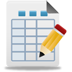
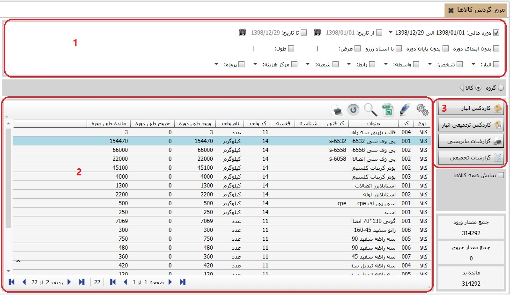

مرور گردش کالاها
در این بخش می توانید از گردش کالاهای خود
گزارش هایی بر اساس فیلترهای مختلف بگیرید، برای آگاهی از
نحوه ی تهیه ی گزارش ها به شکل زیر دقت کنید و در ادامه
توضیحاتی که درباره ی تصویر نوشته شده را مطالعه فرمایید.

شکل بالا صفحه «مرور گردش کالاها»
را نمایش می دهد. این صفحه نیز به چند بخش تقسیم شده است که در شکل بالا
آن را با سه قسمت مشخص کرده ایم که در ادامه به توضیح هر یک می پردازیم:
کادر شماره 1:
همانند صفحه «مرور اسناد انبار»
می توانید نحوه گردش کالاها را در دوره های مالی مختلف یا در بازه
زمانی خاص مشاهده نمایید. همچنین از این قسمت می توانید چگونگی گردش
کالاها را بر اساس انبار، شخص، شعبه، مرکز هزینه و پروژه های تعریف شده
در سیستم فیلتر کنید و نتیجه را در جدول موجود در قسمت دو مشاهده نمایید.

اگر گزینه ی گروه را فعال کنید
در کادر شماره ی دو کالا ها به صورت گروهی نمایش داده می شوند
و اگر گزینه ی کالا را فعال کنید در کادر
شماره ی دو لیستی از تمام کالاهای در گردش را مشاهده خواهید کرد.
کادر شماره 2:
بعد از تعیین فیلترهای مورد نظر در کادر شماره ی یک گزارش
مورد نظر خود را می توانید در کادر شماره ی دو مشاهده کنید.
کادر شماره 3:
بعد از تعیین فیلترهای مورد نظر در کادر شماره ی یک با استفاده از کلید هایی
که در کادر سه وجود دارد می توانید گزارشهای مختلفی تهیه کنید.
 : همان طور که گفته شد
در حالت پیش فرض، در صفحه «مرور گردش کالاها» فقط کالاهایی که در سیستم دارای
گردش می باشند نمایش داده می شود. اگر گزینه «نمایش همه کالاها» را فعال کنید
می توانید لیست همه کالاها (حتی کالاهایی که دارای گردش نیستند) را مشاهده نمایید.
: همان طور که گفته شد
در حالت پیش فرض، در صفحه «مرور گردش کالاها» فقط کالاهایی که در سیستم دارای
گردش می باشند نمایش داده می شود. اگر گزینه «نمایش همه کالاها» را فعال کنید
می توانید لیست همه کالاها (حتی کالاهایی که دارای گردش نیستند) را مشاهده نمایید.
 در پایان توجه کنید که در هر صفحه ای
از لیست کالاها قرار داشته باشید، جمع مقدار ورود، جمع مقدار خروج و مانده
تعداد کالاها در سمت راست و پایین صفحه «مرور گردش کالاها» نمایش داده می شود.
در پایان توجه کنید که در هر صفحه ای
از لیست کالاها قرار داشته باشید، جمع مقدار ورود، جمع مقدار خروج و مانده
تعداد کالاها در سمت راست و پایین صفحه «مرور گردش کالاها» نمایش داده می شود.